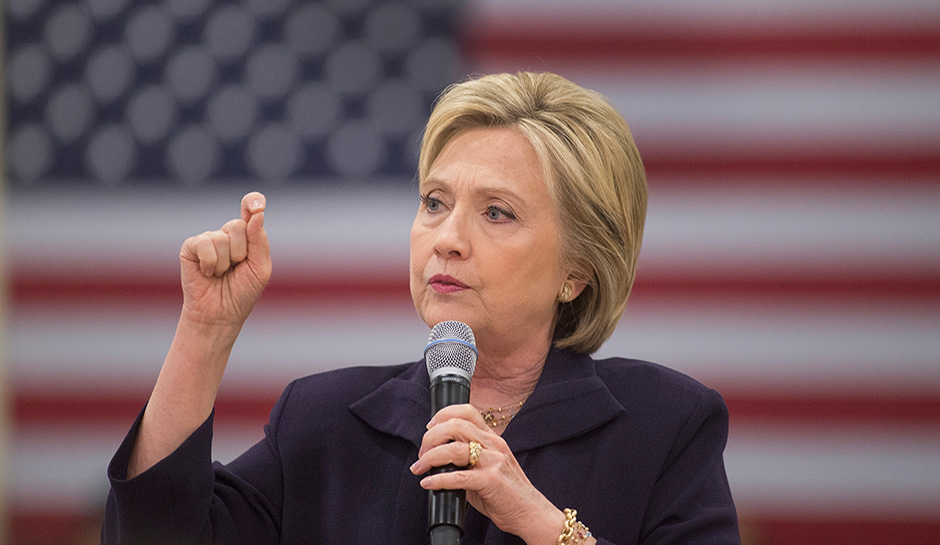

| Donald Trump | Hillary Clinton |
|---|---|
| Republican Candidate | Democratic Candidate |
|  |
A link to the Election Results
My whole life is about winning. I don't lose often. I almost never lose. -Donald Trump
It is often when night looks darkest, it is often before the fever breaks that one senses the gathering momentum for change, when one feels that resurrection of hope in the midst of despair and apathy. -Hillary Clinton
Donald Trump was born on June 14, 1946. In his lifetime he has been a very successful business man and had multiple t.v. appearances. He is from New York City and has lived most of his life there. He has owned a real estate and construction firm for most of his adult life, as well as the Miss USA pageant and The Apprentice, a reality t.v. series. Trump decided to run for president in 2015 and slowly beat out all his other opponents to take the title for the Republican candidate in the 2016 election.
Hillary Clinton was born on October 26, 1947. She is from Chicago, Illinois but attended the prestigious Yale University. Before she got her own start in politics, Hillary Clinton was the first lady of the United States in 1993-2001 with Bill Clinton as President. She was then a senator in 2001-2009. She decided to run for the presidency in 2007 but lost the democratic vote to Barack Obama. She then ran again in this election winning the democratic spot over contender Bernie Sanders.
The 2016 election has been one for the books. With both candidates surrounded by negativity it is no surprise that the election started off as a very close race. In the end though Trump won out with 290 electoral votes compared to Hillary Clinton's electoral votes. Donald Trump will officially be sworn into office on January 20, 2017.